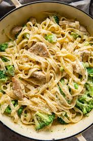

My Favorite Recipe
Chicken & Broccoli Alfredo
Ingredients
- 2 Chicken Breasts
- 15 oz Alfredo sauce
- 1 Bag of Frozen Broccoli
- 1 tablespoon of salt
- At least 1 cup of chicken broth
- Noodles of your choice
Instructions
- Place chicken breasts in a crockpot
- Pour Chicken Broth into crockpot, enough to cover the chicken breasts
- Turn Crock Pot on high, let sit for 5 hours
- After chicken is done, drain the remaining liquid
- Prepare a pot of water half way full
- Add 1 tablespoon of salt to the water, and bring the water to a boil
- When boiling, add your noddles
- When noodles reach desired consistancy, drain the water and pour noodles into crockpot
- Pour Alfredo sauce into crockpot
- Follow directions from the bag of broccoli, to steam it
- When Broccoli is done, put it into the crockpot
- Mix together all the ingredients and enjoy!